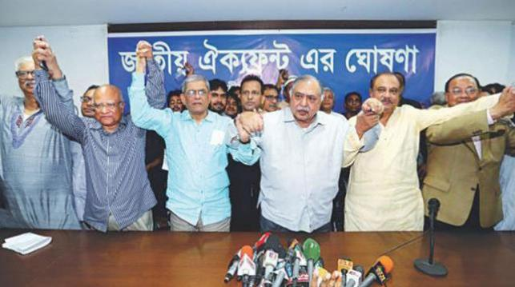

BNP-led 20-party alliance, Oikya Front to join polls

The BNP-led 20-party alliance and the Jatiya Oikya Front will participate in the 11th parliamentary elections.
Oikya Front leaders including Gano Forum president Kamal Hossain and BNP secretary general Mirza Fakhrul Islam Alamgir announced it at a press conference at the National Press Club on Sunday.
The Front leaders demanded the deferment of election schedule by a month. They said that they are joining the polls as part of their agitation for realising their 7-point demand for ensuring a free and fair election.
Oikya Front spokesman Mirza Fakhrul Islam Alamgir said they would keep a close watch on the government as well as on the election commission.
The election commission on Thursday announced that the parliament election will be held on 23 December.
On 13 October, the Jatiya Oikya Front was formed comprising of the Bangladesh Nationalist Party (BNP), Gano Forum led by Kamal Hossain, Jatiya Samajtantrik Dal (JSD) led by ASM Abdur Rab and Nagorik Oikya led by Mahmudur Rahman Manna.
Later, Krishak Sramik Janata League led by Abdul Kader Siddique joined the Oikya Front.
(a+b)2=a2+2ab+b2
H2O
<p>This is a paragraph tag.</p>
Some content goes here
Some content goes here
Some content goes here
Some content goes here
Some content goes here
Some content goes here
Some content goes here
Some content goes here
BITM